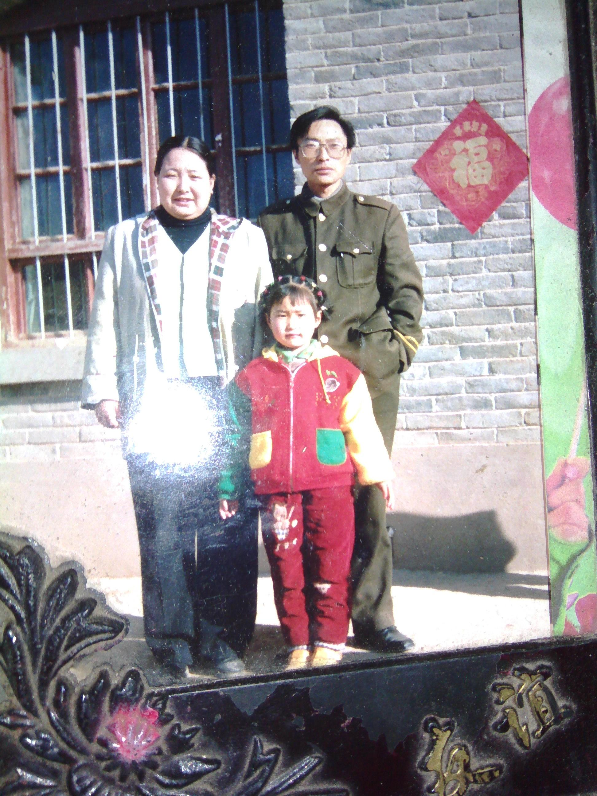
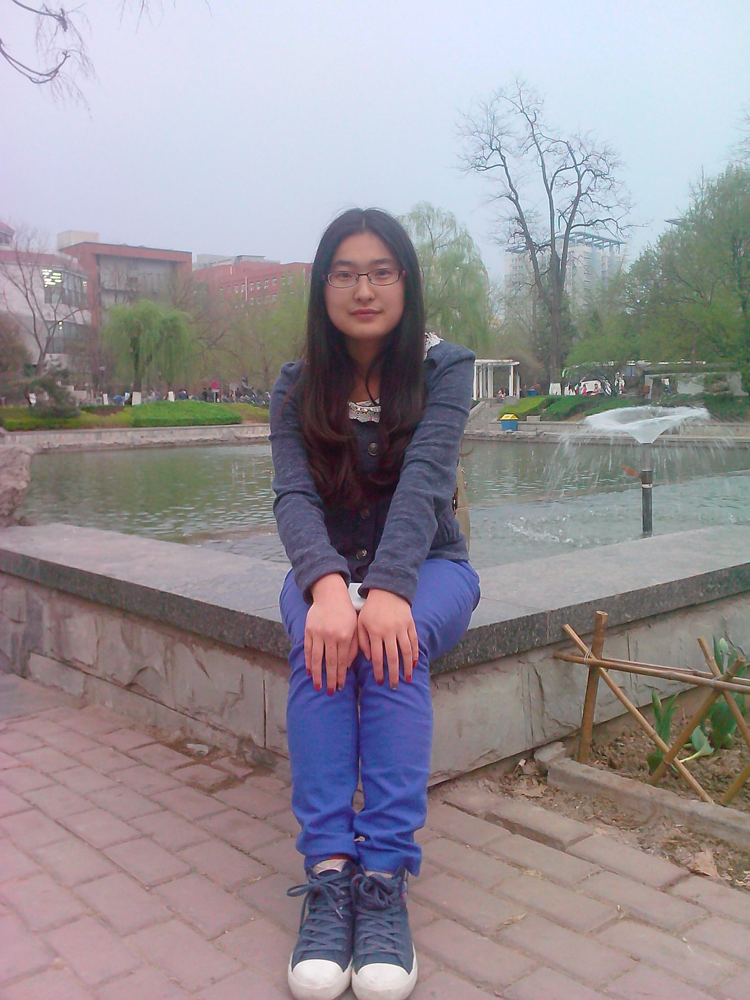
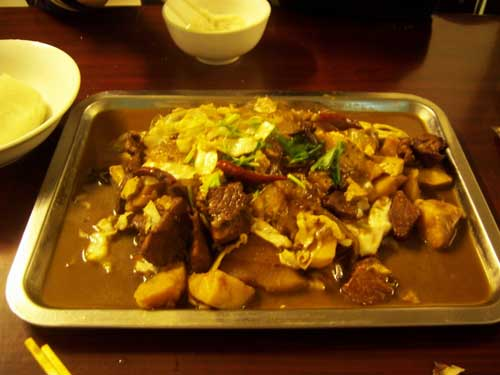

述 篇 |
姓名：刘玉 性别：女 民族：汉 家乡：陕西延安 主修专业：计算机 联系方式：15652956987 回到主页 |
 |  |
食 篇 |
number2:陕北烩菜 |
 | |
站 感 言 |
终于做完整个作业了，果断不是一件容易的事情，整个网站的设计与规划都是我自己想的，才 发现原来设计是一件困难的事情，想要设计出自己觉得好看的模型真是不易啊，接下来就是找 素材了，翻看了好多不同种类的照片，很多时候，都处于一种难以抉择的境地，还好，最终， 有所取舍，不过整个制作过程，虽说有些繁琐，但最终得到自己想要的那种效果时，还是一件蛮开心的事情:) |
||